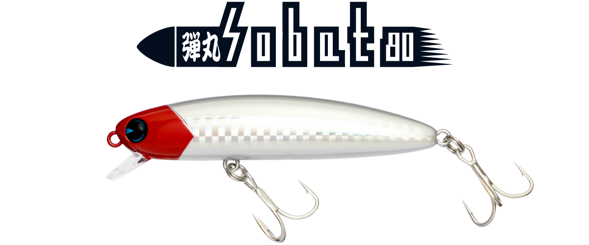
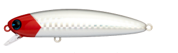
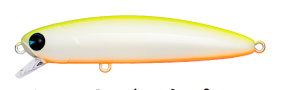
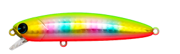
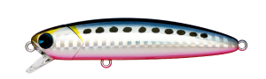
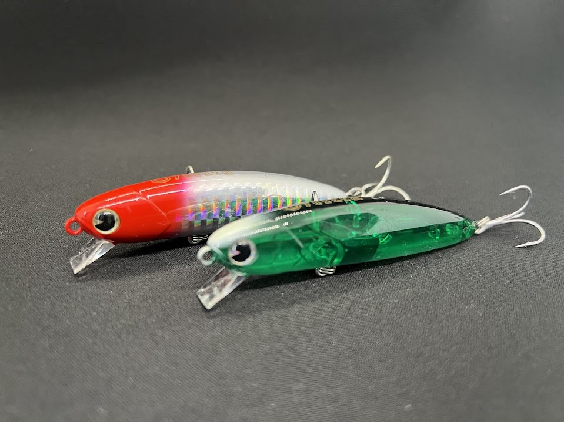
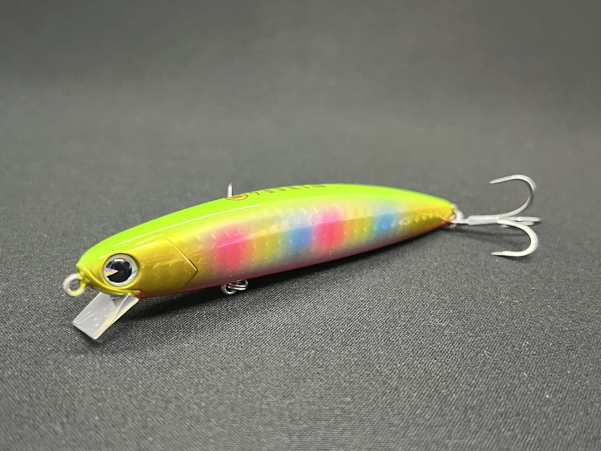

弾丸ソバット80
（弾丸sobat 80）
弾丸ソバット80（弾丸sobat 80）はima（アイマ）のシンキングペンシルです。
人気の「sobat 80」をウェイトチューンした驚異の飛距離を叩き出すヘビーウェイトモデル。重量をアップしてもsobat 80の特徴はそのままに、高いレンジキープ力で深場をじっくり泳がせたり、速い流れの中でも狙ったラインをトレースしたりできます。2023年に限定で復刻されたモデルです。

画像出典:ima公式HP
スペック
- メーカー
- ima（アイマ）
- タイプ
- シンキング（シンキングペンシル）
- 全長
- 80mm
- 自重
- 20g
- レンジ
- 80〜150cm
- フック
- #6
- リング
- #3
- アクション
- タイトスラローム
- ターゲット
- シーバス
- 発売
- 2023年6月（限定復刻）
▼今すぐチェック
弾丸ソバット80の特徴
ソバット80の使いやすさはそのままに、“遠く・深く・速い流れ”に対応させた弾丸モデル
-
圧倒的な遠投性能
sobat 80の13gに対して20gまでウェイトアップ。遠くのポイントやボイル・ナブラを狙い撃てる。
-
抜群のレンジキープ力
速い流れの中でも浮き上がることなく引ける。レンジは80〜150cmと、オリジナル（20〜50cm）より深い層を狙える。
-
食わせのゆらぎアクション
流されるベイトを連想させるゆらぎアクションで、スレた魚にも対応する。
弾丸ソバット80の使い方
基本はただ巻き。着水後にしっかり沈めてから巻き始め、レンジ80〜150cmをタイトスラロームで引いてきます。
速い流れの中でも浮き上がりにくいので、流れの強い河川で狙ったラインをトレースしたり、ドリフトで深場をじっくり泳がせたりする使い方が得意。ボイルやナブラが遠いときは、飛距離を活かしてすばやく届けましょう。
弾丸ソバット80の得意な状況
港湾や河川で、オリジナルのソバット80では届かない遠いポイントや、深いレンジを攻めたい状況が最大の出番。
速い流れの中で浮き上がらせずに引きたいときや、沖のボイル・ナブラを狙い撃ちたいときに強い1本です。
ワンポイント
弾丸ソバット80は2023年6月の限定復刻モデルです。公式ストアでの販売は終了しているので、手に入れるなら販売店の在庫などを探す必要があります。
浅場ではすぐに底を擦ってしまうので、レンジ20〜50cmのオリジナル「ソバット80」と使い分けるのがオススメです。
ソバットシリーズの使い分け
| モデル | 全長／自重 | 得意な場面 |
|---|---|---|
| ソバット80 | 80mm／13g | レンジ20〜50cm。港湾・干潟・河口・河川のオリジナル |
| 弾丸ソバット80 | 80mm／20g | レンジ80〜150cm。遠投・深場・速い流れに（本記事のモデル） |
| ソバット100 | 100mm／17.5g | ひと回り大きなシルエットで、飛距離とアピールを足したいときに |
同じ80mmでも、浅いレンジを丁寧に引くならソバット80、遠く・深く・速い流れを攻めるなら弾丸ソバット80と選び分けるとわかりやすくなります。ソバット80の詳細はソバット80の記事で紹介しています。
人気カラー
弾丸ソバット80のカラーから、オススメを厳選して紹介します。

レッドヘッド定番のレッドヘッド。濁りやナイトでもシルエットを出しやすい。

チャートバックパールチャートの背中とパールのボディで視認性・アピールとも高い定番。

玉彩imaを代表するカラー。アピールが強く視認性も良い。

マコイワシイワシパターンに合わせたナチュラル系。
画像出典:ima公式HP
弾丸ソバット80に似ているルアー
-

ソバット80 ima 詳細はこちら＞弾丸ソバット80の元になったオリジナル。全長80mm・自重13gで、浅いレンジを丁寧に引きたいときに。
-

ソバット100 ima 詳細はこちら＞全長100mm・自重17.5gの同シリーズ。ひと回り大きなシルエットで、ベイトが大きいときの持ち替えに。
-
 アタル70S（ataru 70S）
ima
詳細はこちら＞
アタル70S（ataru 70S）
ima
詳細はこちら＞
全長70mm・自重11gのシンキングシャッド。レンジ50〜180cmと、同じく深めのレンジを探れる。